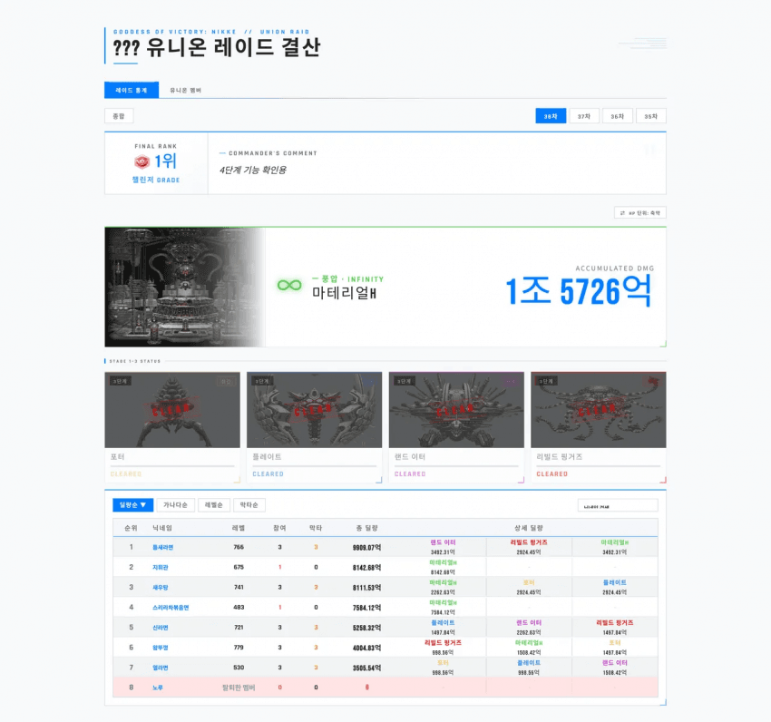
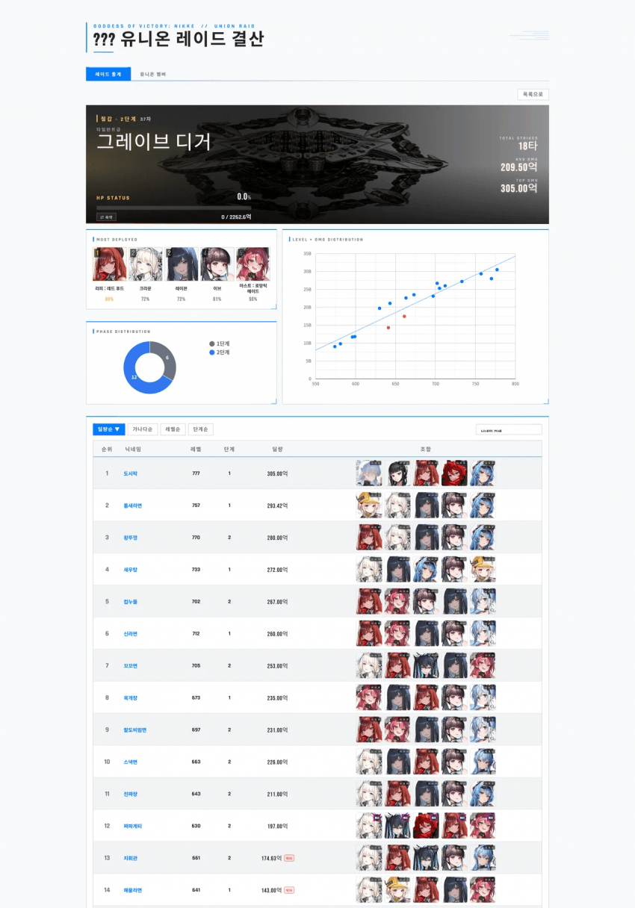
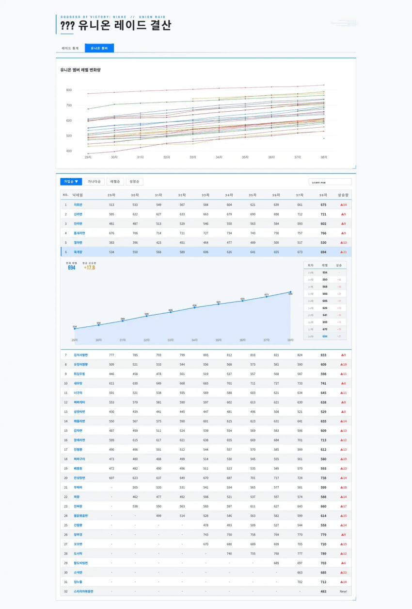
출처: [니케챈] 유니온 레이드 결산 관리 시트 v260605
https://arca.라이브/b/nikketgv/161405505
라이브 > live
목적
유니온장: 데이터만 간단히 입력
멤버: 보기 편하게
Tampermonkey 스크립트
v1.11
회차 데이터 추적 기능 복구
시트 작성법
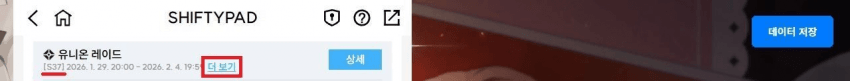
블라링크에서 시프티 패드 들어가서
추출할 유레 시즌을 선택하고
우측 상단에 데이터 저장 버튼 누르면
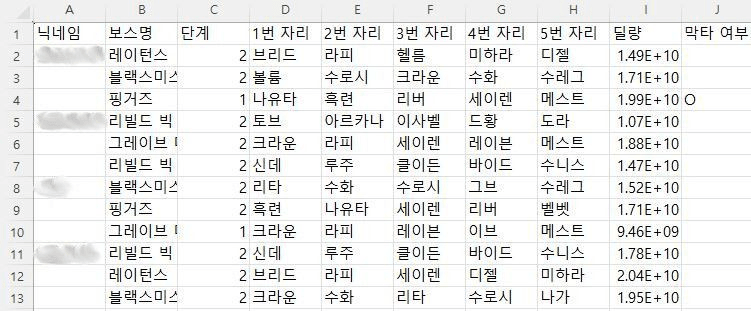
이런 csv 파일이 다운됨
근데 여기서
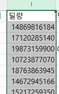
딜량 부분의 너비를 좀 넓혀주셈
(그냥 복붙하면 데이터 이상해짐)
이후에 시트에서 레이드 통계 탭으로 가서
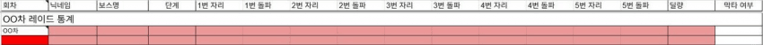
여기에 그대로 복붙해주셈
이거 말고 따로 해줘야 할 건
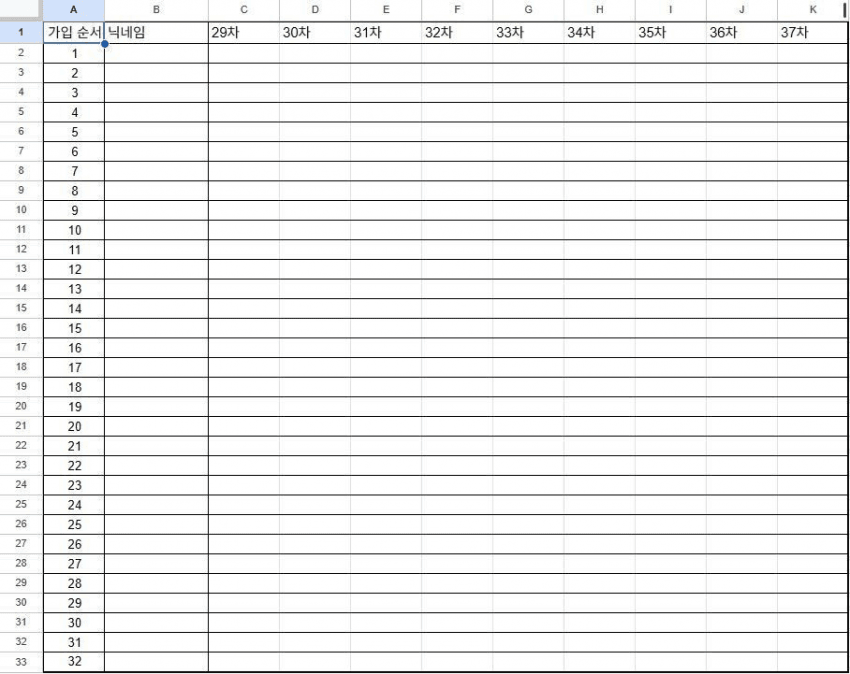
레이드 최종 순위랑
가입 순서대로 멤버들 싱크로 레벨을 기입
이러면 시트는 끝
배포 관련
방법은 시트 참조
처음엔 헷갈릴 수 있는데 배포하는데 1분도 안 걸림
최초 1회 배포 이후에는
시트 수정만으로 내용이 실시간 반영됨
시트 데이터 갱신 방법
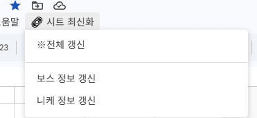
상단 도움말 옆
시트 최신화 버튼 딸깍이면 해결
저 버튼이 안 보일 경우 해결법
https://arca.라이브/b/nikketgv/166657177
각자 입력해둔 니케 줄임말도 날라가니 주의
Apps Script 코드 갱신 방법
유일하게 내가 도와줄 수 없는 부분임
코드 최상단에 주석으로 업데이트 내역을 기록하기로 했음
이거 보고 복붙하는 게 그나마 편할 듯함
결과 예시
시트
자동화 툴
https://arca.라이브/b/nikketgv/171949674
260405 변경점
1. 캡처 기능 개선
이전이랑 다르게 이제 보스 이미지가 눌리는 현상이 없을 거임
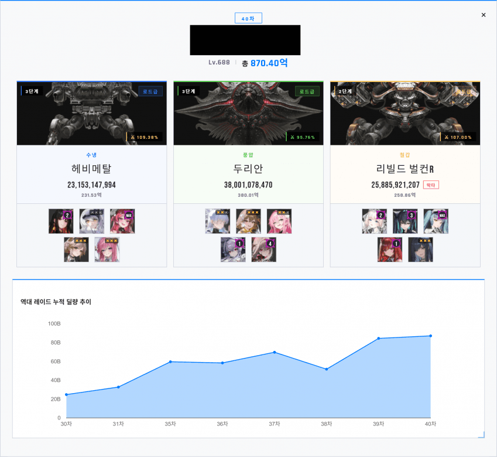
2. 딜량표 보스 필터링 기능 추가
메인 화면 하단의 표에 보스 필터링 기능을 추가함
선택한 순서대로 1,2,3번으로 표시됨
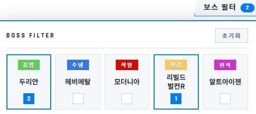
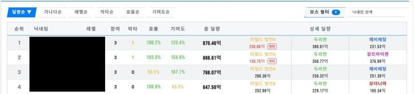
3. 딜량 편차율 및 미니 히스토그램 추가
기존 도넛차트 위치 빈공간에 추가함
간단히 설명하자면 왼쪽의 산점도 차트를 가로지르는 평균 곡선으로부터 타수들이 얼마나 멀리 떨어져있는지 시각화해주는 거임
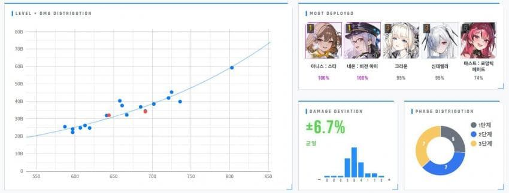
기존 작업자들은 코드 복붙하거나 새로 사본으로 만들어주길 바람
시트처럼 코드도 딸깍 업데이트 가능하게 하고싶은데 쉽지 않음
니케챈에 유니온 레이드 결산용 채신기술이 있어 원작자분께 양해 구하고 가져왔습니다.
간단한 데이터 입력으로 유니온 레이드 통계를 확인할 수 있고 최초입력 후엔 갱신 기능을 통해 간단하게 관리할 수 있습니다.
뿐만 아니라 유니온 멤버들의 싱크로 레벨 성장추이도 파악할 수 있습니다.
정산을 좀 더 쉽게 할 수 있으니 정산 진행하지 않던 분들도 한 번 해보시는 걸 추천드립니다.
260614 수정완료
원작자분께 감사드립니다!
문의, 피드백은 여기 댓글 주시면 제가 취합해서 여쭤보겠습니다.